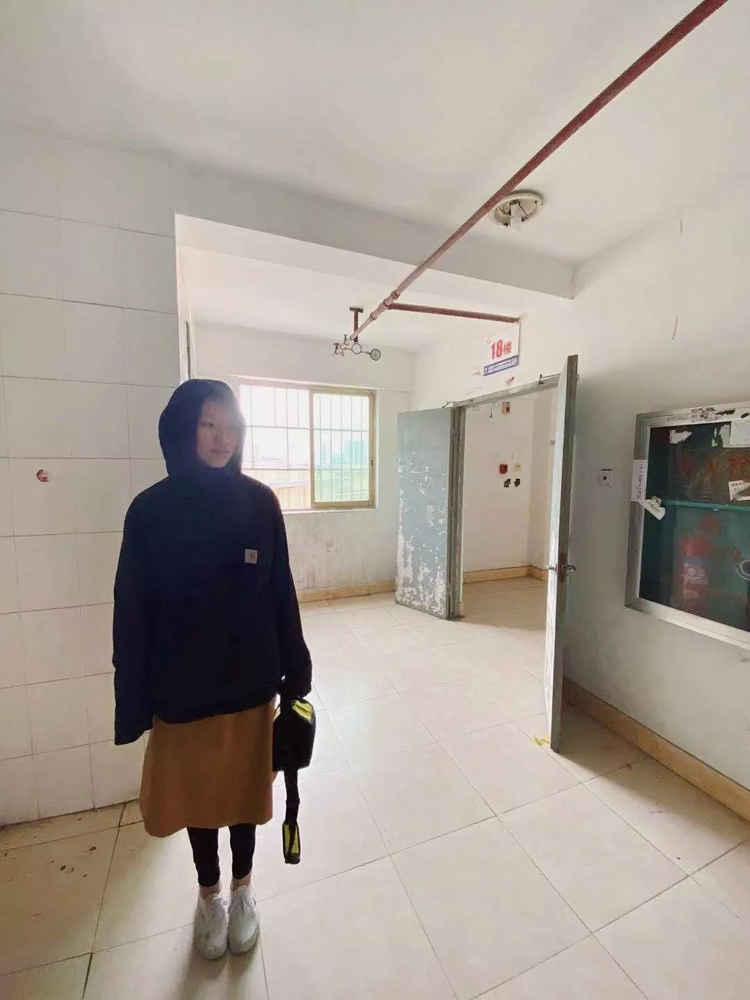
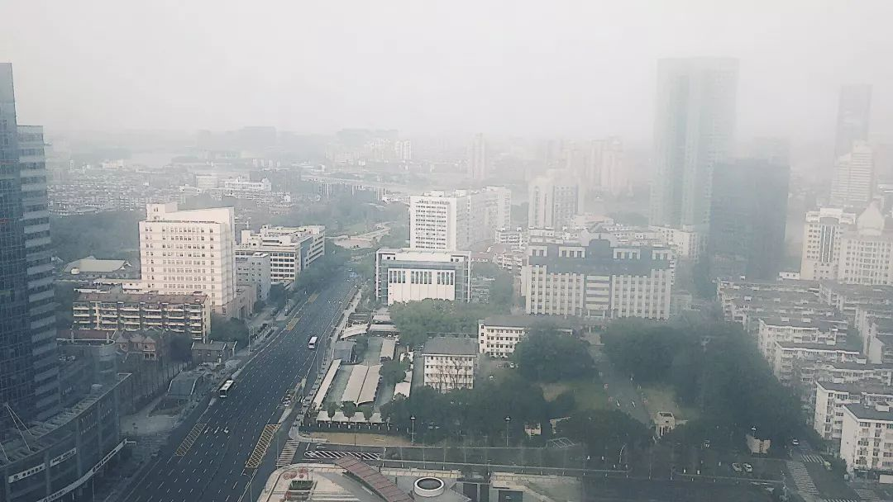
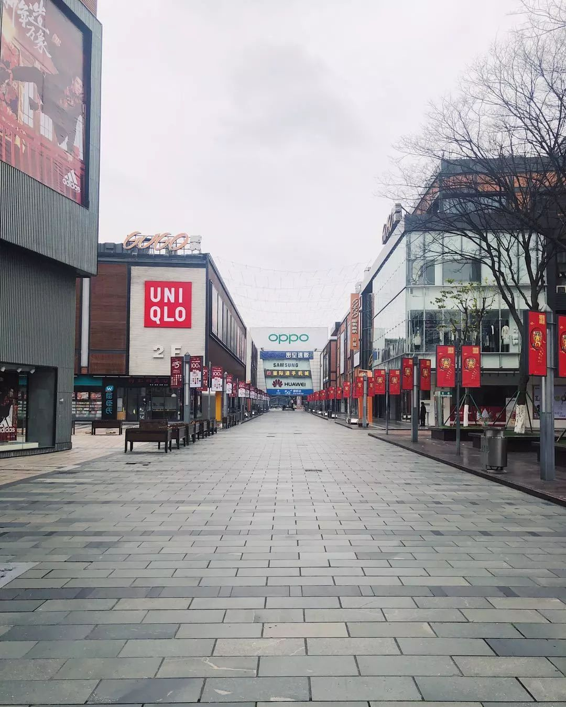
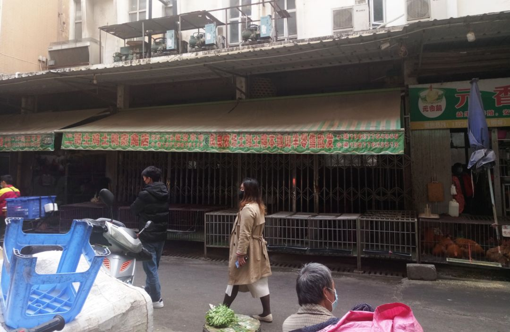

李铁：增加互信互联，避免城市防疫各自为战
原文链接 备份链接 当下，在有效防控疫情的同时，需要发挥城市和区域间的协调与合作，防止因各自为战，造成非重点疫区复工复业的困难，影响经济和社会的稳定发展，以及人民生活的安定 文 | 李铁 从1月23日武汉封城以来，除了重点疫区，绝大部分城 …

2月，三明治发起 “中国素描”， 希望大家用最质朴动人的笔调，把这个时刻的中国各地记录下来。目前已经开始记录的城市有宁波、百色、咸阳、上海、香港、汕头、济南、烟台、南京、苏州、重庆、恩施……
这个特别的时刻，在中国的千万个城市和乡村，生活的面貌如何在一夜之间被改变，如果我们能留下一点记录，就是为了不遗忘，不能忘。
高楼上的观察者

记录者：Chenchu
坐标：浙江 宁波
开始工作以后，我搬到了市中心繁华地段一栋古旧公寓楼的顶楼。
该怎么形容我住的地方呢？下楼就是地铁一号线和二号线的交汇处，如果从房间望出去，左手边是鼓楼，右手边是天一广场，身后是城隍庙，面前是市政府旧址，区政府现址。就在这么一个黄金地段，我有了每天从26楼的窗户向外望，看楼下车流、看远方群山的习惯。

从我房间看出去的宁波市中心。画面右下角是老市政府的办公楼，左上角是宁波市第二医院，肺炎的定点医院。
宁波的疫情管控大概是从春节开始收紧的。私家车比往年春节都少，少到每个红绿灯，四岔路口排队的都只有两三辆车。一开始，马路上还有很多公交在按时跑。因为道路通畅，竟然觉得公交出现的频次比平时还要高。然后有一天，所有的地铁线路都停了，公交的发车间隔也拉长到了一小时一班。共享单车、市民自行车早已没什么人骑。晚上九点后的马路，几乎是一片寂静了。

宁波天一广场，市中心繁华地段的老牌商业广场。
疫情防控最紧张的时候，中午时段都空无一人。

药行街，在天一广场旁边，几乎没有车。
路的尽头是将近百年历史的灵桥。
没有了大量私家车和公交车的道路，剩下的就是零星的外卖小哥、出租车，和有时拉警报有时又不拉的救护车。本来骑电瓶车就很洒脱的小哥们，入夜后干脆骑上了快车道，嗖一下就飞过路口奔向他们的目的地，令人担心他们的安全。看到出租车开过，我就忍不住想，今天他们能拉到多少单呢？路上根本是看不到什么人啊。要是驶过的出租车没有亮着绿色的接客小灯，便会替他们开心一小下：可总算接到了客人！
说到救护车，其实看到的次数是很多的。从楼下的四岔路口向前望，靠左手一点的位置就是宁波二院，是收治病人的一家定点医院。空旷街道上的救护车很好辨认，虽然它们好像很多时间都是静悄悄地开过，几乎是不动声色的，是载着中招了的病人，还是普通病人呢？高楼到地面的距离让我只能像观察一幅画一样观察这些不动声色的救护车。
二院和我居住的公寓楼之间，有一个很大的中山广场，从窗户望出去能清楚地看到。小时候我就住在中山广场后面，现在那地方的周边已经是城区中一块待改造的历史文化保护街区。这两天常常会回忆起疫情开始前中山广场的样子。因为有一块巨大的空旷平地，又在市中心，很多周边居民平常都会骑着电动车，从下午到晚上在广场里跳交谊舞、迪斯科、霹雳舞之类挺有年代感的舞蹈。有一次刷豆瓣，还在视频的栏目里看到有人录下了中山广场霹雳舞“舞王”的舞姿。只是那时候的热闹有种突然被强力吸尘器吸走的感觉，片甲不留。夜晚地上的景观灯倒是一盏盏照常亮起。它们是这些舞者的替身吗？它们怎么不说话呢？
第三例确诊病例是个粉店老板
记录者：兔子雨
坐标：广西 百色
这里是广西西南边陲的小城百色，地理位置上临近东南亚，与越南接壤，地形以山区、丘陵为主，少有平原地带。摩托车、电动车是人们最钟爱的出行方式。边骑电动车边逛菜市，是人们的特有的习惯。
随着百色市右江区人民政府颁布的防控新冠肺炎通告出台，百色城区的餐饮服务业、流动摊贩被全面禁止。

东风菜市难得一见宽敞的后巷

东风菜市鱼摊附近
这是百色城20多年来冷冻期最长的春节，不管是物理上还是心理上的。由于第三例确诊病例是个粉店老板，全百色城的粉摊被全面关停，再难以见到那样的盛景：各色电动车和小汽车一波接一波堆积在粉店门口，一碗又一碗热腾腾的米粉打开了人们新一天的希冀。而现在，紧闭的粉店卷帘门和背后唏嘘的老板，似道出了特殊时期小城的无奈。
一夜间，农村阿公阿婆新鲜挑担出来的小菜苗小瓜果没了、县份常驻城区菜场的商贩信息出货的土鸡土鸭土货没了、居住在水库附近打鱼人新鲜打捞的小河鱼小虾米螺蛳没了、大菜市旁祥庆巷手艺人新鲜蒸制的糯米肠卷筒粉也没了……

东风菜市家禽土货商贩零星营业
本土小吃集体下线，饮食大过天的小城人民开启了苦修般的生活。不能挑挑拣拣，对小菜货比三家，不能跟摊主讨价还价，唠唠家常。这对慢节奏、细生活的小城人民来说，简直失掉了买菜之乐趣、之精神！疫情的肆虐，在心理上，让买卖双方无暇顾及交易之外的生活，戴上口罩，亦更难解读到买卖双方之间的微妙表情，自少了一番博弈之趣味。
人人形色匆匆，机械地去完成买菜的任务，还要忍受限购，忍受排队，忍受分配……
想要过把嘴瘾，全靠自家手艺！一些机敏的个体经营者、养殖者、种植者，手艺人，纷纷抱团取暖，建立起五花八门的社交群组，借助短视频、vlog、微信接龙等形式，风风火火做起了线上营销。 本土小吃完成了状态的更新和流转，以一种新形态重又出现在小城人民视野中。
每个人都在避免和任何人碰头
记录者：三慢
坐标：陕西 咸阳
这座小城没有生活物资紧缺的急迫，超市管理严格。坐电梯下行，偷偷摸摸咳嗽一声，还招致了对面上行电梯上的一双白眼，帽子下白发耀眼。眼神里的潜台词呼之欲出。
超市里人不多，但全都在尽力避免和任何人碰头，独享一片有消毒水刺鼻味道的货架。当然，没人来得及享受。这并不是一个浪漫时刻，你很难捕捉到苦中作乐的念头。

平时热闹的零食区，现在空空荡荡。
大脑里飘过的是：“盐和醋，调味区！卷纸和抽纸，对，靠近文具区！蔬菜水果最后买，现在，人肯定都在那片挤着……” 极致理性计算着路线和时间，维护着形只影单的安全。
但只要深入果蔬区，就躲不过左右夹击，非要逼着人人抢占先机，拿购物车先将一军。前方被挑选砂糖橘的老人抄了路，无奈静止在夹缝里，等待救援，身体机警，嘴巴紧闭。脑子里的声音又出现了：“为什么没有带手套……怎么回事……这些人是附近的吗……好想咳嗽……不能……别人会害怕……”
如果这只是一个人脑海里台词，声音也不会这么轰响。相同的恐惧各悬空中。了解一本小说人物的状态，要看他说什么，也要观察他在做什么。重新看那位老人，她已经以最快的速度挑拣完了手里的桔子，都是汁皮饱满的。戴着口罩，她说不出的台词是什么？够掩饰脆弱吗？像“黄昏已近不怕夜沉”，“少时多困苦，今日无多惧”这样的台词，她出门前在镜前默念，现在却洪亮地朝我扑过来，抓住了我，消融不安。而不经意间，已经从老人拿捏桔子的专心捕捉了一句密语进口袋，鼓励自己迈步。
打好价签，老人推走了各色蔬果，不同品牌的米面油，直奔一盘盘的鸡蛋去了。道路畅通，我与计价员互换眼神，番茄贴上价签。轻声说谢谢，他没听到，但伸手缩手间，也把“明天会更好”的密语递给了他。
年迈者时刻审视着命运，顿悟随时间层层叠起，层层轻薄密实，不可言与他人。而疫情非得拿刀子切开心事，验证这份大彻大悟的厚重，这座城市里的年迈者也未吝啬智慧。在超市里奔忙，这是他们的抗疫前线，守护小城的甜咸如常。这是属于小城的一个浪漫时刻，一大清早就让人有了苦中作乐的念头。
三明治·中国素描计划
在“中国素描”计划中，我们为参与记录的写作者们设置了一些问题。我们将在“中国素描”系列中摘录他们的回答。
用50字描述这场疫情之前，你所生活的城市是怎么样的？
记录者：兔子雨
坐标：广西百色
我所生活的城市是中国西南边陲的十八线小城市，随手一拍就颇具东南亚特色。这里山区丘陵密布，靠近北回归线地带，大部分本地人精瘦、肤色又黑又黄。疫情发生这段时间，小城气温持续走低，人们穿上厚重的棉服，戴上雪白的口罩，由于确诊病例不多，人们看起来倒是心宽体胖，肤色沾了口罩的光，白了好几度。
记录者：宋蕊
坐标：湖北恩施
作为一个旅游城市，喧嚣嘈杂昼夜不停是常态。除了永远人挤人的景区，白日里豆皮店合渣店路边小吃摊和土家餐馆是主力，待夜幕降临按摩店又亮起红红绿绿的招牌，街头巷尾永远都是生意人的战场。每次回家我们都会去吃豆皮过早，当天现做的豆皮爽滑劲道，青椒肉丝浇头带着刚出锅的镬气，加一点辣油就是完美的早餐，吃完出门遇到熟人再来一句。
记录者：鹤子
坐标：苏州
她很美，是现代与古典的结合体，充满活力又端庄典雅。她的节奏很快，不论工作日或是周末，早晚高峰时，地铁总是挤出了大城市的水平。观前街和苏州中心这些商业区受到年轻人的青睐，饭店的门口每天都有衣着时尚的年轻人排队等候。皮市街、葑门等老街区则是老年人的天地，苏州阿姨就算是与小贩砍价，吴音依旧软糯好听。这是个包容性很强的城市，常住人口达1000万以上。疫情的恐慌来袭前，这座城市包括这里的人们都有条不紊的过着苏式生活。
记录者：李二妈
坐标：香港
香港是一个有着极强生命力与恢复能力的城市，人们这样说。在经过之前六个月的动荡后，我相信了。在疫情的警报拉响前，香港已经在各种警报声与喧闹声中过了六个月有余。有许多个周末的夜晚，在电视里看到硝烟四起、满城狼藉。而天又亮起来的时候，令人惊讶地，港铁扫完了满地的碎玻璃，又开始载着一车车西服革履的打工仔返工去了。
你最近一次出门做了什么？
记录者：王木木
坐标：山东菏泽
正月十一那天，老公带着我偷偷回了趟娘家，因为各个村进出的路都被封死，车无法进出。只能骑电动车从土路绕。小路弯弯曲曲，坑坑洼洼，一路上颠簸，差点把胃里的东西都颠出来。原本开车5分钟的车程，因为绕绕绕去，我们走了将近半个小时。
记录者：大饼
坐标：重庆
6号，小区封闭管理前夜，我和我妹。“你想不想出去看看外面什么样？”我妹就一孩子，大过年的十天没上过街了，哪里晓得那些揪心的故事，痛苦的眼泪，只两放眼光的对我直点头。我们上了街，冷清。流过小镇的那条河两岸挂满了金色的元宝灯，安静的倒影在河面，我们低着头循着灯影看去，一条小船独自靠在水岸，灯影像天上的星，温柔的抚着船，夜深。这样的静谧美好，不知有几人看见。
中国素描计划持续招募中

扫码或点击“阅读原文”
加入“中国素描”计划
与我们一起留存特殊时期的中国城市记忆


与三明治一起记录特殊时期的中国城市记忆


原文链接 备份链接 当下，在有效防控疫情的同时，需要发挥城市和区域间的协调与合作，防止因各自为战，造成非重点疫区复工复业的困难，影响经济和社会的稳定发展，以及人民生活的安定 文 | 李铁 从1月23日武汉封城以来，除了重点疫区，绝大部分城 …
原文链接 备份链接 房地产并不能在经济大船外“独善其身”，它取决于两个外部因素：疫病的控制和经济的复苏 图/IC 1、和SARS期间的03年楼市没什么可比性 在这场疫情中，关心楼市、讨论房价的人少了，这是一件好事。 一些专业号针对2003 …
原文链接 备份链接 全国除了湖北省以外的城市确诊人群数量上百的已经有29个城市。 全文1703字，阅读约需3.5分钟 疫情还在持续，截至2020年2月14日，全国已经确诊感染新型冠状病毒63935例，其中湖北省51986例。 但比较好的 …
原文链接 备份链接 _ 建议疫情较轻的城市管理者要有敢于承担风险的意识，最大化提高科学防控方法和手段，自行决定何时复工和开业，从而降低经济和社会风险，恢复经济的正常平稳运行 _ 文 | 李铁 从1月23日武汉封城开始，已经过去半个多月了。 …
原文链接 备份链接 _ 在疫情危机发生的时刻，我们应该反思的，是应当及早强化推进户籍管理制度改革和外来人口市民化的进程，解决人口大规模流动带来的社会问题 _ 图/法新 文 | 李铁 新型冠状病毒引发的全国性防疫之战，面临的最大挑战就是传播 …